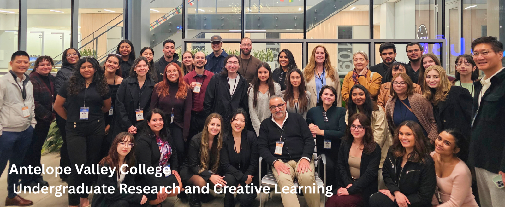

The Undergraduate Research Center serves AVC students and faculty across STEM and non-STEM disciplines. Our mission is to promote, develop, and celebrate undergraduate research and creative activity while helping students build academic, professional, and research skills.
Whether students are just getting started or preparing to present their work, the Office of Undergraduate Research & Creative Learning (URCL) is here to support meaningful research and creative projects at AVC.
Undergraduate research helps students gain hands-on experience, strengthen academic confidence, and prepare for transfer, graduate study, and a wide range of careers.
Explore research opportunities, journals, presentation venues, and ways to get involved early in your academic journey.
Connect with mentoring resources and highlight areas where AVC students can participate in research and creative activity.
Review conferences, journals, and presentation opportunities that can help students share their work beyond AVC.
Research projects may be faculty-initiated or student-initiated and can occur over the summer or across multiple semesters outside the classroom.
Course-based undergraduate research experiences (CUREs) engage entire classes in research questions with unknown outcomes. Mini-CUREs bring that experience into shorter modules, typically one to three weeks.
Project-Based Learning (PBL) is an instructional methodology that encourages students to develop deeper knowledge and skills by engaging in real-world, meaningful projects. These PBLs can be curricular or co-curricular. Some undergraduate activities that address real-world problems can also be classified as PBL.
The Undergraduate Research in Archival Recovery Experience (U-RARE) is a faculty-mentored program at Antelope Valley College that introduces students to hands-on archival research and collaborative scholarship. Student-scholars gain practical research skills while contributing to the preservation and interpretation of campus and community histories.
The directory below highlights faculty research and creative interests that may help students identify potential mentors and project areas.
Dr. Darcy L. Wiewall
Western Mojave Archaeological Collections Research; Community-Engaged Archaeology; AV Oral History Project; Biological Anthropology and Primate Research.
Dr. Patricia Butterworth
Effect of natural compounds in the locomotor activity and the mutagenesis of the fruit fly Drosophila melanogaster .
Dr. Patricia M. Palavecino
Native Bees and host plants (California natives); ecology of Western Joshua trees.
Dr. Zia Nisani
Scorpion biology, animal behavior, and urban ecology with special emphasis on effects of urbanization on behavior.
Prof. Angela Madsen
Testing various growing conditions on plant fitness in a greenhouse setting, including agriculture plants and native plants.
Prof. Osvaldo Larios Perez
Yeast growth, death, and functional decline during biological aging.
Prof. Caleb Healey
Micro-internships: CNC Mentorship Program — Bridging the Gap in Metal Fabrication Education.
Dr. Thamrongsak Cheewawisuttichai
Synthesis and biological evaluation of novel antifungal agents.
Dr. Norma Jones
Intersections between communication and AI/innovation; pedagogical practices and innovations; representation; heroes/heroines; and media studies from interdisciplinary approaches.
Harish Rao
Interested in the small group communication process, project generation, and production.
Dr. Kyu Lee
Machine Learning and AI Systems; Database Systems; Cluster Storage Systems; Cloud Computing.
Prof. Sawsan Farrukh
Research interests span post-colonial and comparative literature, with a focus on representations of Middle Eastern identities across time. Also engaged in nature writing, particularly where literature and science converge to explore conservation, environmentalism, and observation of the natural world; interested in how these narratives help us understand our environment and its impact on individual and collective experience.
Dr. Francisco Fuentes
Political economy, workforce diversity, social equity, and underrepresented populations.
Prof. Kevin North
Micro-internships: Film & Video Special Effects — work with green screen and miniatures to create life-like effects.
Linda C. Parker
My current research interests are: Higher education, leadership, humor, and organizational climates. I am also involved in the U-RARE project, documenting, and analyzing AVC Library Archives.
Dr. A. Andrada
Dead White Men (Bancroft & Ferve, 2018) — a sociological study analyzing qualitative responses and descriptive statistics to evaluate its influence on sociological conceptual comprehension. Examines how the text mediates the gap between sociological theory and practical execution in the sociology of education, while deriving themes to enhance reader engagement.
Dr. Carina Karapetian Giorgi
(1) Intuitive forms of knowledge production, temporalities, and memory/hauntings; (2) Creating LGBTQ+ and Middle Eastern/North African student digital archives; (3) Forthcoming student-focused qualitative research projects; (4) Participant observation and qualitative research projects in NGOs.
This archive is organized by year to keep the main page easier to browse while still preserving the full record of publications and presentations.